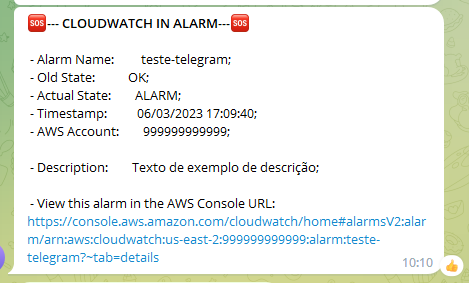
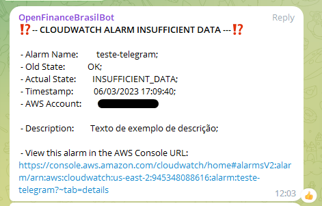
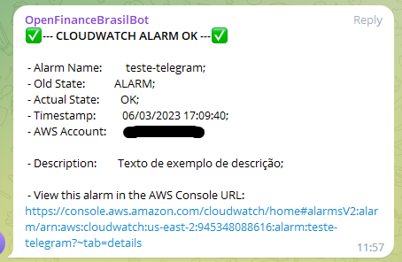

Bot de CloudWatch no Telegram¶
Objetivo¶
Na intenção de dinamizar a disponibilidade de acesso a informações importantes de logs que são fornecidas pelo AWS CloudWatch, esse bot traz as infos por meio do canal de comunicação Telegram.
Passo a Passo¶
Criar o Token do BOT do telegram:
Seguir os passos do site oficial do telegram:
Com o Token Criado, criar um grupo ou caso queira que o bot retorne as mensagens para o seu número de celular, mande uma mensagem para o bot ou no grupo.
Essa mensagem vai gerar um ID e esse ID você vai pegar usando a url abaixo no navegador:
https://api.telegram.org/bot123456789789:TOKEN-DO-BOT/GetUpdates
Response: "message":{"message_id":62,"from":{"id":198XXXXXX,"is_bot":false,Vai puxar algo parecido com isso e você tem que pegar o ID do
"from":{"id":19817XXXXX,Exemplo de ID -> 19817XXXXX
Esse é o ID que vamos usar no código na linha: 41, é o ID do grupo ou chat que o BOT vai enviar a mensagem.
Criar um “IAM role” para usarmos no lambda com as seguintes permissões:
Crie uma policy com o json
Criar IAM role como serviço para o Lambda e colocar a politica nova.
SNS criar um Topic com o nome que desejar. (Standard)
Lambda(Author from scratch).
Crie a função com o nome que desejar;
Use python 3.9;
Associar o IAM Role que criamos;
Dentro da função você vai fazer o upload do telegram-alarm.zip
Vá em Configuration e crie uma trigger apontando para o SNS que criou.
Em configuration do lambda coloque uma variavel de ambiente como:
Key: TELEGRAM_CHAT_ID | Value: o número do chat Id que pegamos no começo.
Secrets Manager:
Store a new secret (Guardar novo segredo)
Selecione o tipo como: Outro tipo de segredo (API key, OAuth token, other.):
- Coloque:
Key/Value:TELEGRAM_BOT_TOKEN | Plaintext: TOKEN DO SEU BOT!
Agora é só testar o código usando um json de alarme:
Para funcionar precisa que no seu Alarme tenha o Actions apontado para o SNS que ativa o lambda!
Dessa forma, você pode ter as seguintes notificações em seu Telegram.
  